Code
# ggplot2 and extensions
library(ggplot2)
library(ggthemes)
library(ggrepel)
library(midr)
library(midnight)
# data handling
library(dplyr)
# data
library(gapminder)
library(rnaturalearth)
library(fmsb)データの構造を色にする：3種類のカラーパレットを使いこなそう
# ggplot2 and extensions
library(ggplot2)
library(ggthemes)
library(ggrepel)
library(midr)
library(midnight)
# data handling
library(dplyr)
# data
library(gapminder)
library(rnaturalearth)
library(fmsb)ggplot2 は、R でデータ可視化を行う際の標準的なパッケージです。 その豊富な機能に加え、単体では作成できないプロットを実現するための多くの拡張パッケージが開発されています。
ggplot2 と拡張パッケージを活用することで、たとえば以下のような多様なプロットを作成することが可能です。
ggplot(mtcars, aes(x = hp, y = mpg)) +
geom_smooth(method = "gam", formula = y ~ s(x, bs = "cs"),
color = "grey80", fill = "grey90", alpha = 0.5) +
geom_point(aes(size = wt, color = factor(cyl)), alpha = 0.8) +
geom_text_repel(
aes(label = rownames(mtcars)),
size = 3,
box.padding = 0.4,
point.padding = 0.2,
segment.alpha = 0.5,
max.overlaps = 15
) +
scale_size_continuous(range = c(1, 8)) +
scale_color_brewer(palette = "Set1") +
labs(
x = "Gross Horsepower",
y = "Fuel Efficiency (Miles per Gallon)",
size = "Weight",
color = "Cylinders"
) +
theme_midr(grid = "xy") +
theme(legend.position = "bottom")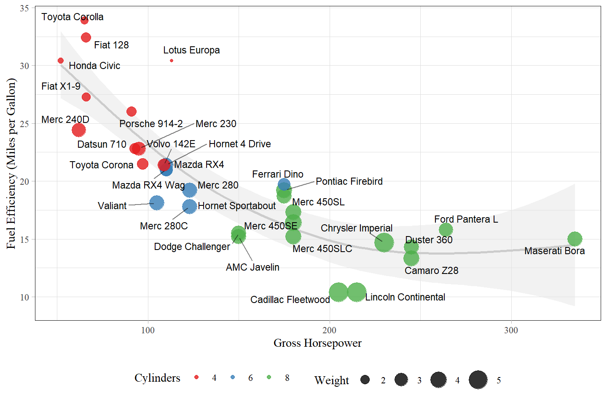
ggplot(
data = gapminder,
mapping = aes(
x = gdpPercap,
y = lifeExp,
color = continent
)
) +
geom_point() +
geom_smooth(method = "gam", formula = y ~ s(x)) +
scale_x_log10() +
scale_color_theme(theme = "moon") +
scale_fill_theme(theme = "moon") +
theme_midr(grid = "xy") +
theme(legend.position = "bottom") +
labs(x = "GDP per Capita", y = "Life Expectancy")
japan <- ne_states(
country = "japan",
returnclass = "sf"
) |>
mutate (
name = name |>
gsub(pattern = "Ō", replacement = "O") |>
gsub(pattern = "ō", replacement = "o") |>
gsub(pattern = "Kochi", replacement = "Kouchi")
) |>
left_join(
Prefe0 |> select(PNAME, E0F.2020),
by = c("name" = "PNAME")
)
legend_label = "Life Expectancy at Birth\n(Female, 2020)"
ggplot(data = japan) +
geom_sf(
mapping = aes(
color = E0F.2020,
fill = E0F.2020
)
) +
scale_color_theme("eclipse", middle = 87.74) +
scale_fill_theme("eclipse", middle = 87.74) +
coord_sf(
xlim = c(125.5, 146.5), ylim = c(26.5, 45.0)
) +
labs(fill = legend_label, color = legend_label) +
theme_midr(grid = "xy") +
theme(legend.key.height = unit(40, "pt"))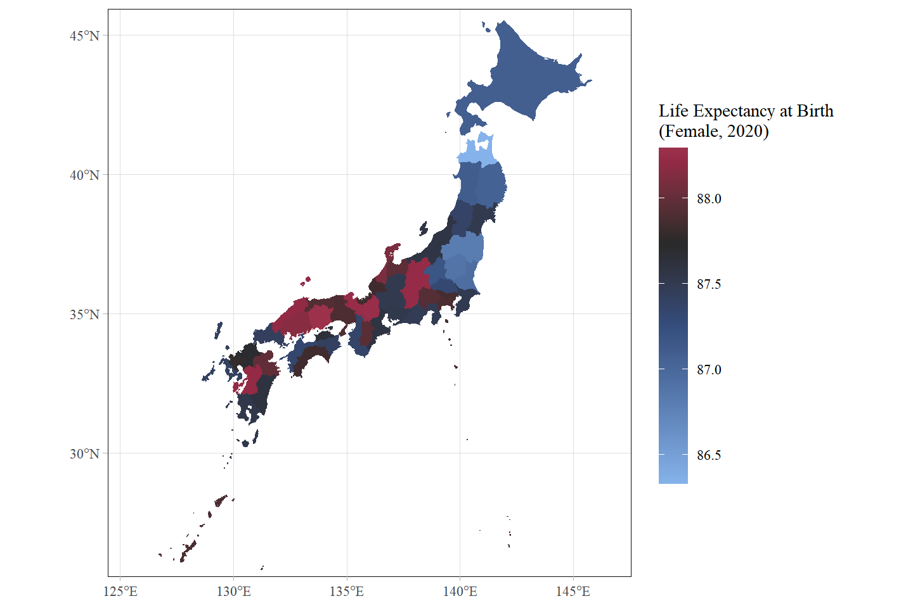
ggplot2 パッケージは、開発者の Hadley Wickham が提唱した “Layered Grammar of Graphics” (層状のグラフィックス文法) という理論に基づいて設計されています。
この理論において、プロットは、散布図やヒストグラムのような典型的パターンによって分類される代わりに、点や線などの図形的要素やデータに対する統計的変換などの抽象的な構成要素の組み合わせによって構成されるものとして扱われます。
Defaults (デフォルト設定)
プロット全体で共有される基盤です。ggplot() 関数で data (データフレーム) と mapping を指定します。
aes() 関数を通して指定されます。Layer (レイヤー)
データを実際に図形として描写する層です。一つのプロットは複数のレイヤーを持つことができ、各レイヤーは以下の要素で構成されます。layer() 関数で作成可能ですが、通常は geom_*() 型や stat_*() 型の短縮関数を用いて作成します。
geom (Geometric object): 点 (point)、線 (line)、棒 (bar) など、実際に描画される図形的要素の種類です。
stat (Statistical transformation): データに対する統計的変換の方法です。データをそのまま使うのか (identity)、あるいは要約統計量 (summary) や平滑化曲線 (smooth) などを計算してから使うのかを定めます。
position (Position adjustment): 棒の積み上げ (stack) や点の散らばり (jitter) など、図形的要素の配置を調整する方法です。名前や position_*() 型の関数で指定できます。
Scale (スケール)
データの値を「物理的な属性（画面上の位置、特定の色、点の大きさなど）」に変換する際の尺度です。たとえば、\(1\) という数値を「青色」や「\(x\) 軸の左端」に対応させるルールを制御します。scale_*() 型の関数で指定します。
Coord (座標系)
図形的要素の位置に関する値を描画領域における実際の位置に対応付ける規則です。一般的なのはデカルト座標系 (cartesian) のほか、極座標系 (polar) などに切り替えることで、同じデータから円グラフなどを作成することもできます。coord_*() 型の関数で指定します。
Facet (ファセット)
特定の変数に基づいてデータを分割し、複数のパネルに並べて表示する手法です。facet_*() 型の関数で指定します。
通常、私たちは geom_point() などの短縮関数を使いますが、Layered Grammar of Graphics の理論を厳密にコード化すると、たとえば散布図は以下のように記述されます。
ggplot() +
layer(
data = diamonds,
mapping = aes(x = carat, y = price),
geom = "point", # データを点で表現
stat = "identity", # データを加工せずそのまま使用
position = "identity" # 重なりを調整せずそのまま配置
) +
scale_y_continuous() + # y軸に連続値のスケールを指定
scale_x_continuous() + # x軸に連続値のスケールを指定
coord_cartesian() # 直交座標系を指定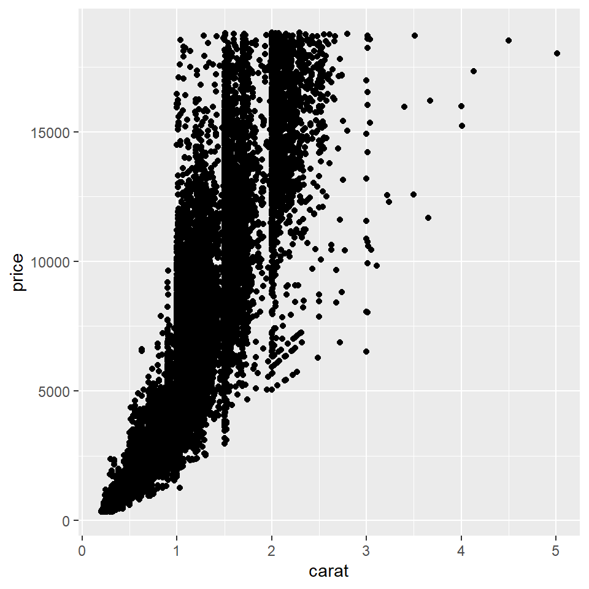
実際には、geom_point() や geom_histogram() といった短縮関数が用意されています。 これらは内部で stat や position をデフォルト値として持っており、適切な Layer を作り出します。 さらに、Scale や Coord もデータの型などに合わせて自動的に選択されるため、ユーザーは極めてシンプルなコードで高度な可視化を実現できるようになっています。
ggplot(data = diamonds, mapping = aes(x = carat, y = price)) +
geom_point()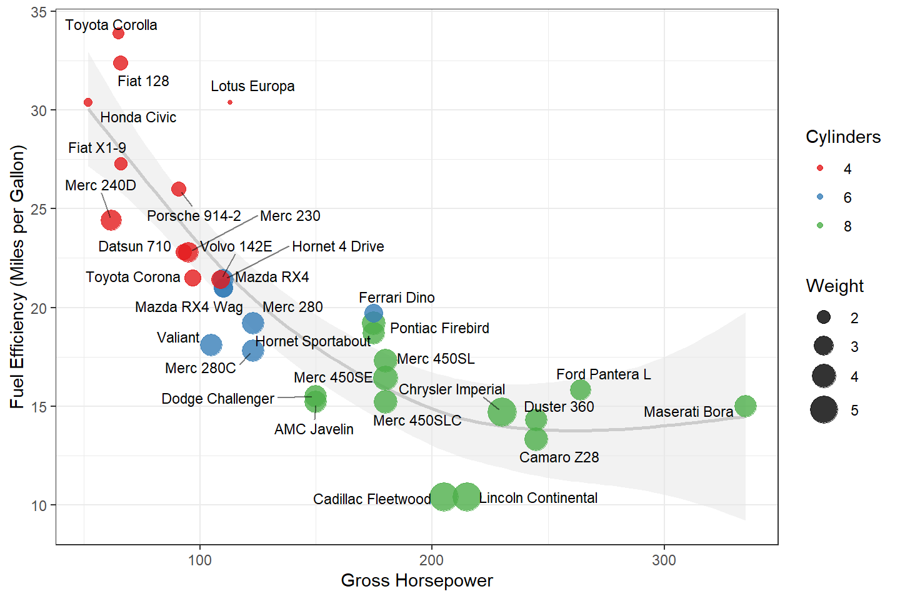
ggplot2 の真価は、理論的には複雑な layer() の構造を、「何を表現したいか」に直結した短縮関数で記述でき、しかも、それを柔軟に重ね合わせることが可能な点にあります。
ここからは、散布図や棒グラフなどの代表的なレイヤーを描くためのコードと内部構成を紹介します。
最も基本的なレイヤーです。データ点をそのままの位置に配置します。
内部構成: geom = "point", stat = "identity", position = "identity"
短縮関数: geom_point()
ggplot(data = diamonds) +
geom_point(mapping = aes(x = carat, y = price)) +
scale_x_log10() + # x軸に対数スケールを指定
scale_y_log10() # y軸に対数スケールを指定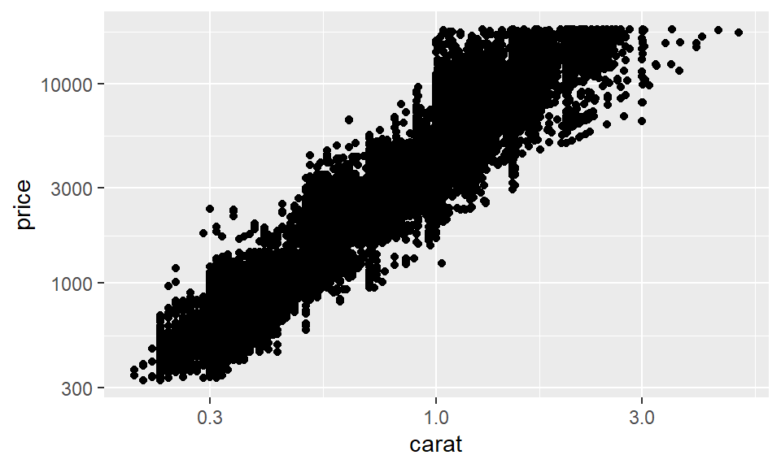
因子型データにおける水準の出現度数を棒の高さで表現する場合と変数の値をそのまま棒の高さとして使う場合で、使うべき geom と stat が変わります。
内部構成: geom = "bar", stat = "count", position = "stack"
短縮関数: geom_bar()
ggplot(data = diamonds) +
geom_bar(mapping = aes(x = clarity)) 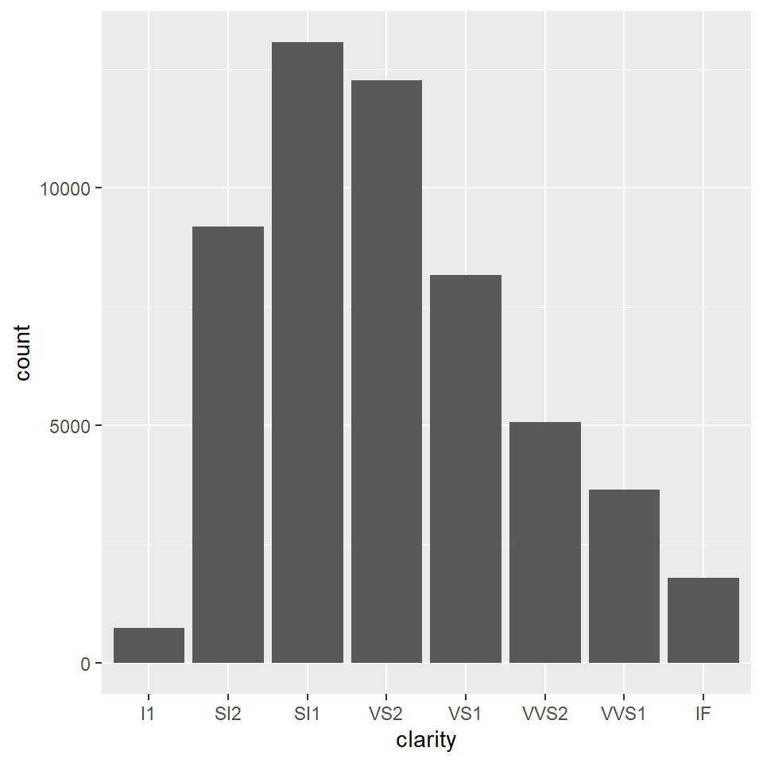
内部構成: geom = "col", stat = "identity", position = "stack"
短縮関数: geom_col()
ggplot(data = diamonds |> count(clarity)) + # カウント済みデータを指定
geom_col(mapping = aes(x = clarity, y = n)) # x軸上の位置に水準を対応付ける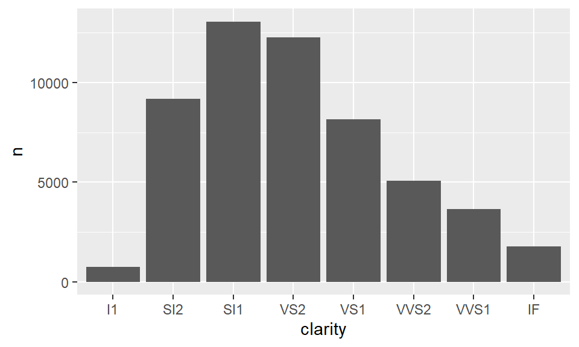
連続量を一定の区間 (bin) に区切り、その中のデータ数を集計します。
内部構成: geom = "bar", stat = "bin", position = "stack"
短縮関数: geom_histogram()
ggplot(diamonds) +
geom_histogram(aes(x = price), bins = 20) +
scale_x_log10()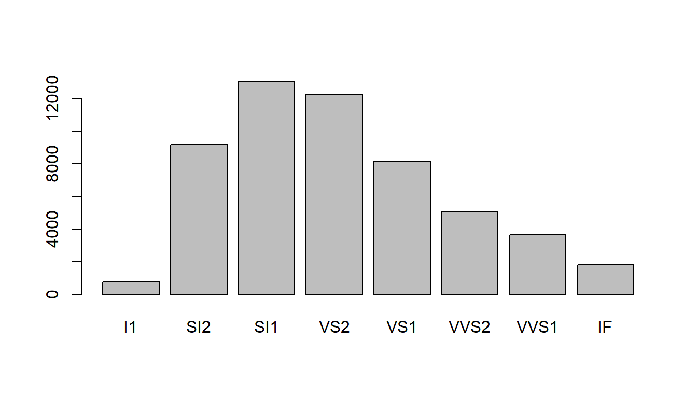
ヒストグラムを滑らかにしたもので、データの分布密度を推定して描画します。
内部構成: geom = "area", stat = "density", position = "identity"
短縮関数: geom_density()
ggplot(diamonds, aes(x = price)) +
geom_density() +
scale_x_log10()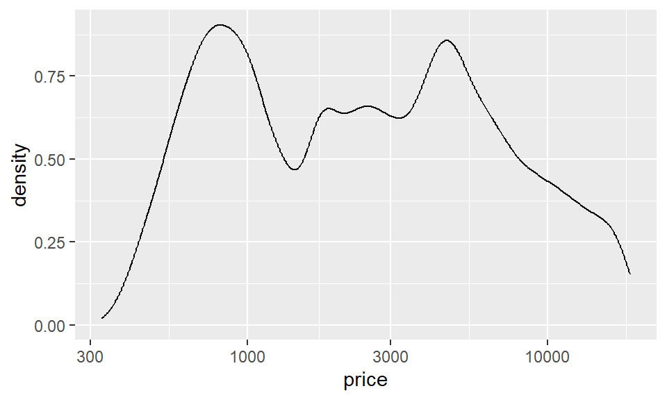
データの分布（中央値、四分位範囲、外れ値）を要約して表現します。
内部構成: geom = "boxplot", stat = "boxplot", position = "dodge2"
短縮関数: geom_boxplot()
ggplot(diamonds, aes(x = clarity, y = price)) +
geom_boxplot() +
scale_y_log10()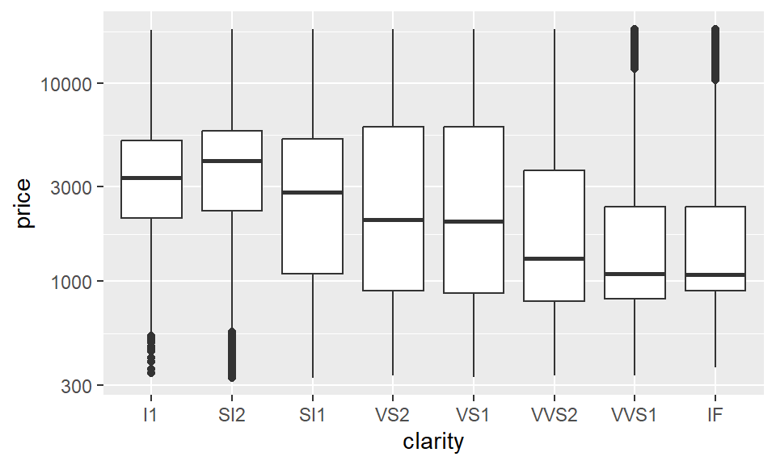
時系列データなど、点と点を線で結んで推移を表現します。
内部構成: geom = "line", stat = "identity", position = "identity"
短縮関数: geom_line()
ggplot(economics, aes(x = date, y = unemploy)) +
geom_line()
折れ線グラフの下側を塗りつぶしたものです。変化の「量」を強調したいときに使われます。
内部構成: geom = "area", stat = "identity", position = "stack"
短縮関数: geom_area()
ggplot(economics, aes(x = date, y = unemploy)) +
geom_area()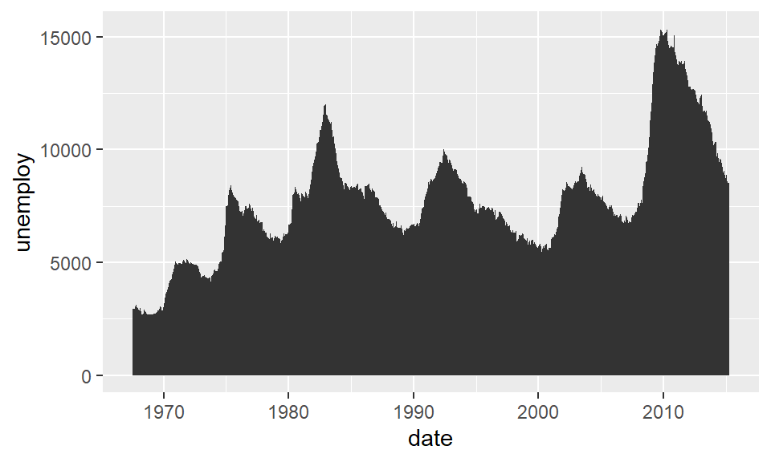
\(x, y\) のグリッド（格子）に対して、第3の変数 \(z\) の値を色で表現します。なお、この例では汎用的な geom_tile() を使用しますが、グリッドサイズが一定なら、geom_raster() を利用して高速に描画することも可能です。
内部構成: geom = “tile”, stat = “identity”, position = “identity”
短縮関数: geom_tile()
ggplot(faithfuld, aes(x = eruptions, y = waiting, fill = density)) +
geom_tile()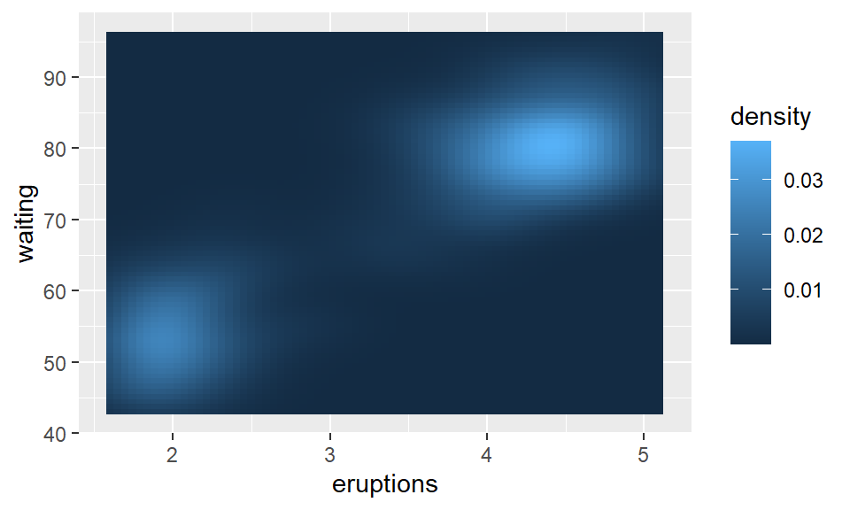
\(x, y\) 平面上の高さ (\(z\) 値) が同じ地点を線で結んだり、色で塗り分けたりして表現します。
内部構成: geom = “path”, stat = “contour”, position = “identity”
短縮関数: geom_contour()
ggplot(faithfuld, aes(x = eruptions, y = waiting, z = density)) +
geom_contour()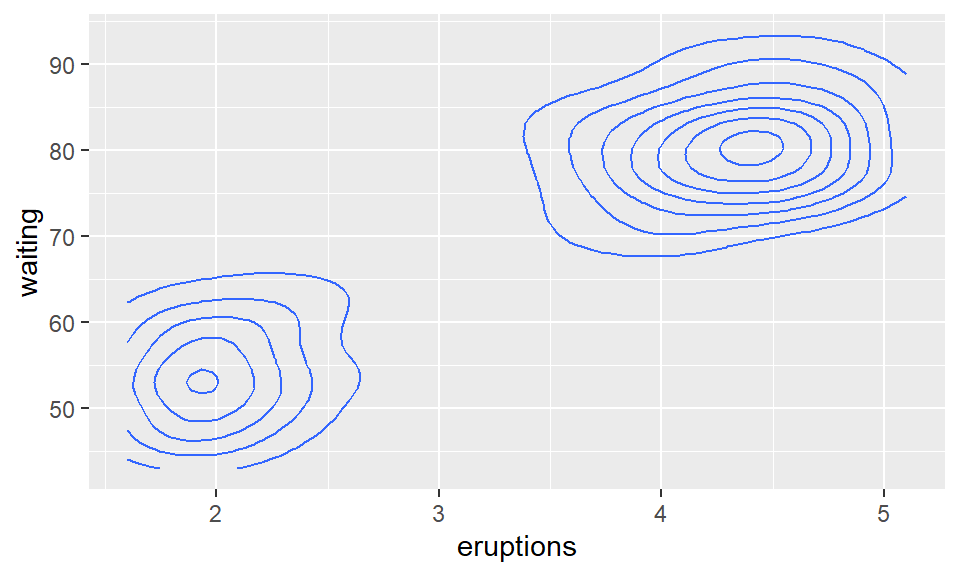
内部構成: geom = “polygon”, stat = “contour_filled”, position = “identity”
短縮関数: geom_contour_filled()
ggplot(faithfuld, aes(x = eruptions, y = waiting, z = density)) +
geom_contour_filled()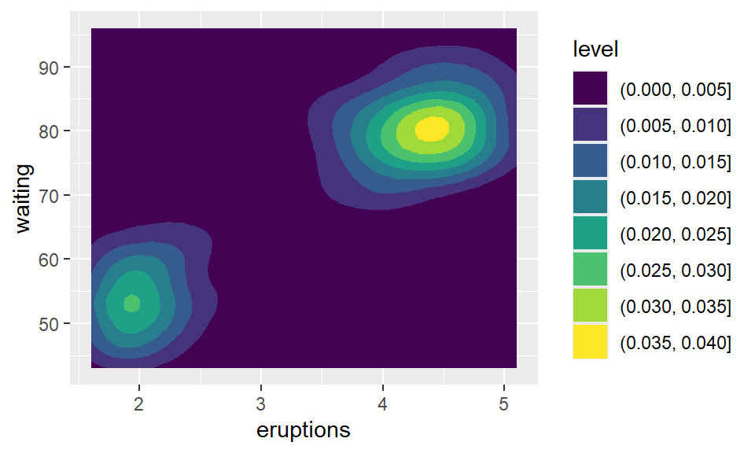
審美的属性 (Aesthetics) の中でも、色は人間の視覚に最も強く訴えかける要素です。
ggplot2 やその拡張パッケージには、color/colour や fill 属性を制御するためのスケール関数が驚くほど豊富に用意されています。そのため、ユーザーは簡単なコードでプロットを美しく彩ることができます。しかし、選択肢が豊富であるために、ユーザーには選択の責任が生じます。データの性質や構造に即したパレットに基づくスケールを選ばなければ、グラフはどれほど美しく見えても、情報の解釈を歪め、読み手に誤解を招く原因になりかねません。
色彩を「単なる飾り」ではなく「データの説明変数」として機能させるためには、以下の3つの基本パレットの使い分けをマスターすることが不可欠です。
色同士に明確な順序や大小関係がないパレットです。 因子型変数の水準を塗り分ける用途に適しています。
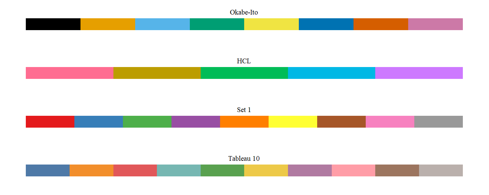
HCL パレット
人間の知覚に基づいた HCL 色空間 (Hue: 色相、Chroma: 彩度、Luminance: 輝度) を利用します。彩度（鮮やかさ）と輝度（明るさ）を一定に保ち、色相（色の種類）のみを等間隔にサンプリングすることで、特定のカテゴリだけが目立ってしまう視覚的不平等を防ぎ、公平な比較を可能にします。
Okabe-Ito パレット:
色覚の特性に関わらず、多くの人が色の違いを判別できるように設計されたユニバーサルデザインのパレットです。
質的パレットには、対応付ける変数の水準数によって色の順序が変化するなどの特殊な挙動をするものがあります。特に、水準数がパレットの提供する色数の上限を超えた場合の挙動には注意が必要です。以下はその一例です。補間 (Interpolation): 足りない色を計算で作り出し、グラデーションのように対応させる。
循環 (Cycling): 用意された色を使い切り、最初に戻って繰り返す。
エラー: カテゴリ数が多すぎるとして描画を停止する。
明度や彩度が、低い値から高い値に向かって一方向に滑らかに変化するタイプのパレットです。 一方向に増加する数値型変数を表現する用途に適しています。
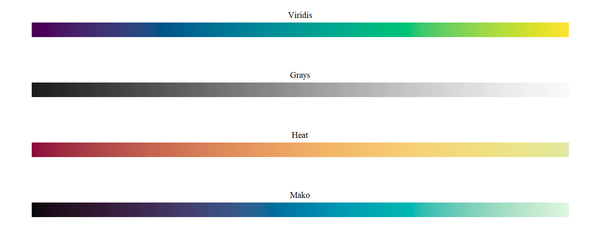
白や薄いグレーのような中立な色を中央に持ち、両極端に向かって異なる2つの色相が濃くなっていくタイプのパレットです。 ゼロなどの明確な基準値があり、そこから正負の方向に広がる連続変数を表現する用途に適しています。
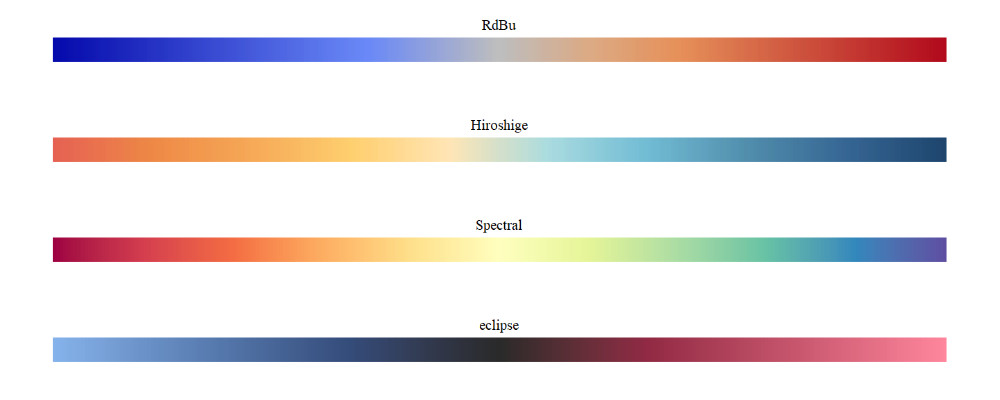
ggplot2 パッケージは、データから柔軟にプロットを作り上げるための最強の道具です。 レイヤーを重ねてプロットの骨格を構築したら、データの構造に合致したカラーパレットで彩ることで、直感的で説得力のあるプロットを作成することができます。
ぜひ皆様も、ggplot2 とその拡張パッケージ (ggplot2 extensions) を駆使して、ご自身のデータに最適な色を与えてみてください。
Enjoy!!
ggplot2 extensions https://exts.ggplot2.tidyverse.org/
all your figure are belong to us https://yutannihilation.github.io/allYourFigureAreBelongToUs/
Wickham, H. (2008), “Practical Tools for Exploring Data and Models”, Ph.D. thesis, Iowa State University, link
Wickham, H. (2010), “A Layered Grammar of Graphics”, Journal of Computational and Graphical Statistics, 19(1), 3–28., link